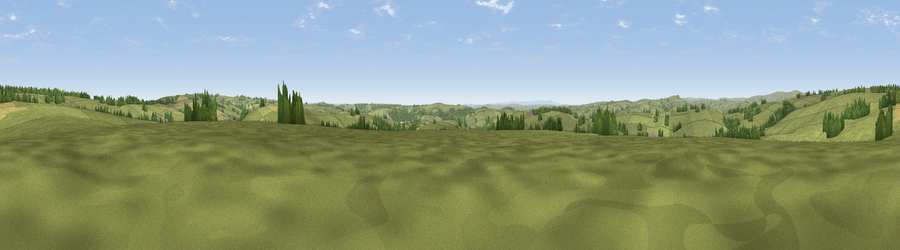

Viewpoint near Brompton Regis
#19607 in England · top 43% of its area beats it · near Brompton Regis · footpathWhere it is
The exact computed spot (SS 95725 34225). Click the marker for map links.
Public access: a public right of way passes within 4 m of this spot. Computed from Natural England's CRoW access layer and OpenStreetMap rights of way — not the legal definitive map. Always verify locally.
The view, rendered

A 360° render of this exact spot computed from the terrain model, tree cover and land cover — summer colours, afternoon light, calibrated against photographs of famous viewpoints. Real trees, hedges and buildings will differ in detail.
The panorama
Grey silhouette: terrain skyline in each direction (720 bearings, Earth curvature and refraction included). Dashed green: skyline with trees (+15 m) and buildings (+8 m) as obstacles. Blue strip: how far the ground is visible on each bearing.
Where the view opens
Wedge length = distance to the farthest visible ground on that bearing (vegetation-aware). Rings at 10, 25 and 50 km.
What fills the view
87% grassland · 8% woodland · 5% cropland
Angular shares of the visible panorama (visual magnitude), not map area. Landscape diversity 0.21 (0–1 Shannon).
Key numbers
More beautiful places nearby
The staircase of upgrades: each row has a higher view potential than everything closer. Driving times are estimates from straight-line distance, calibrated against real road routing — check an actual route before setting out.
| Place | Direction | Drive | Score |
|---|---|---|---|
| Viewpoint near Luxborough | NNW · 3 km | ~7 min | 73.5 |
| Monkham Hill [Withycombe Common] | NNE · 6 km | ~13 min | 75.8 |
| Viewpoint near Luxborough | NE · 6 km | ~13 min | 82.5 |
| Viewpoint near Roadwater | ENE · 6 km | ~13 min | 82.9 |
| Viewpoint near Roadwater | NE · 7 km | ~14 min | 85.2 |
| Viewpoint near Luxborough | NNE · 7 km | ~14 min | 85.5 |
| Viewpoint near Minehead | N · 13 km | ~24 min | 86.2 |
| North Hill | N · 13 km | ~24 min | 86.3 |
51.09782, -3.49055 · source: screening · position refined by local search. Computed location — check access rights before visiting.